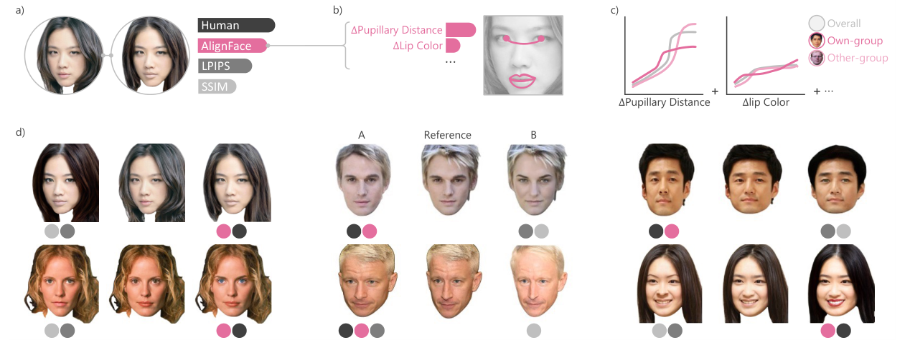

Human-aligned
Modeling observer groups accounts for variation in perception, including own-group effects.
ACM MULTIMEDIA 2026
National University of Singapore
* Equal contribution
THE IDEA
What makes two faces look alike? AlignFace connects facial attributes to human similarity judgments, making the contribution of each attribute explicit—and accounting for differences across observer groups.

Modeling observer groups accounts for variation in perception, including own-group effects.
A neural generalized additive model captures how attribute differences shape perception nonlinearly.
A concept bottleneck expresses similarity through meaningful featural and configural facial attributes.
FACETS dataset
A dataset of face triplets with overall and attribute-level similarity judgments.
USE ALIGNFACE
Requires Python 3.10 and Git LFS.
git lfs install
git clone https://github.com/yyyinghuang/AlignFace.git
cd AlignFace
git lfs pull
python -m pip install -e .from alignface import AlignFace
metric = AlignFace.from_pretrained("overall")
result = metric.compare("a.jpg", "b.jpg")
print(result.similarity)Use aligned, masked RGB faces. Higher scores indicate greater similarity; scores are not identity-match probabilities.
Run the bundled synthetic-face demo. A successful check prints PASS.
python examples/quickstart.py --verify